Cross-Validation Results: Automatic Report and Interpretation
Metrics by Fold
| Fold |
R2 |
MSE |
RMSE |
MAE |
| 1 |
-0.601681 |
1407.468356 |
37.516241 |
34.304623 |
| 2 |
-0.371364 |
677.694463 |
26.032565 |
20.806198 |
| 3 |
-2.967683 |
962.104750 |
31.017813 |
27.048852 |
| 4 |
-2.184621 |
728.728391 |
26.994970 |
24.844556 |
| 5 |
-0.426337 |
1219.864011 |
34.926552 |
34.063195 |
Feature Importance (mean ± std)
| feature |
mean_importance |
std_importance |
| CR |
0.131621 |
0.036495 |
| PL |
0.124120 |
0.046730 |
| OL |
0.117069 |
0.102127 |
| OR |
0.115313 |
0.047961 |
| PR |
0.110081 |
0.046254 |
| TL |
0.101262 |
0.040387 |
| FR |
0.085365 |
0.035323 |
| FL |
0.075933 |
0.018745 |
| CL |
0.075076 |
0.016668 |
| TR |
0.064160 |
0.016346 |
Main Plots
feature_importances_mean_std.png
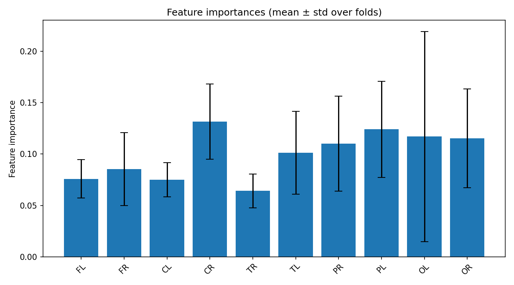
feature_importances_correlation_heatmap.png
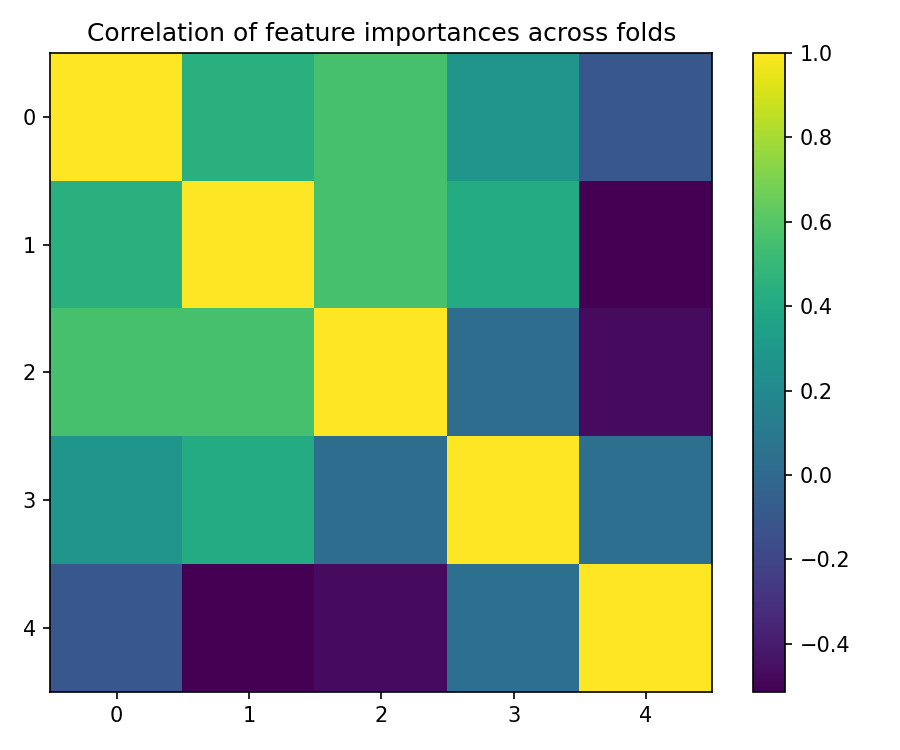
best_fold_2_feature_importances.png
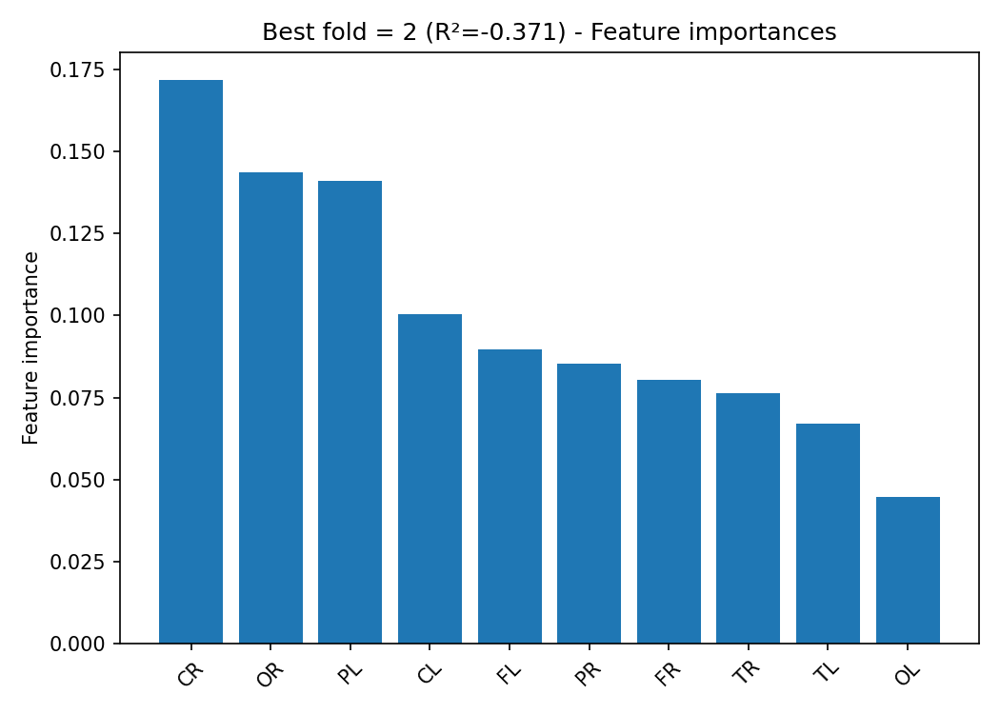
True vs Predicted Scatter Plots (by fold)
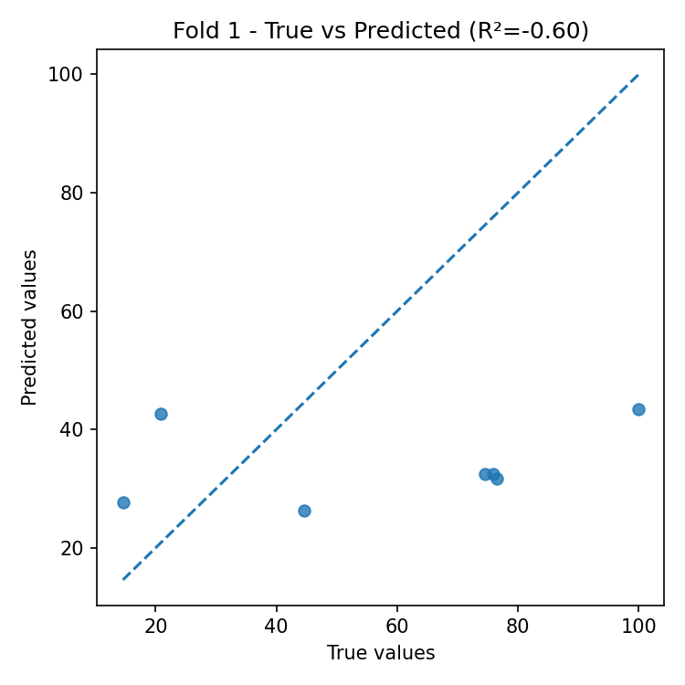
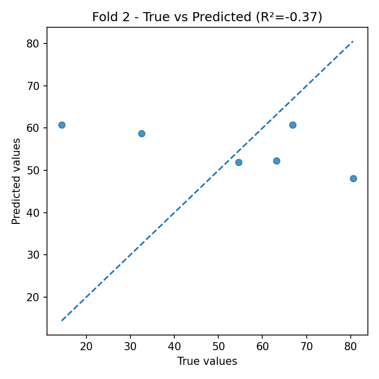
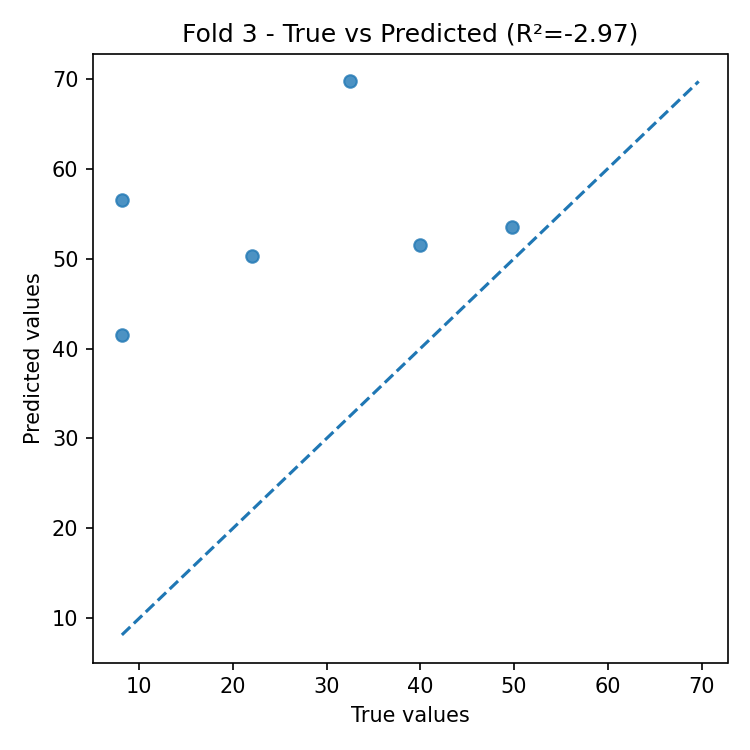
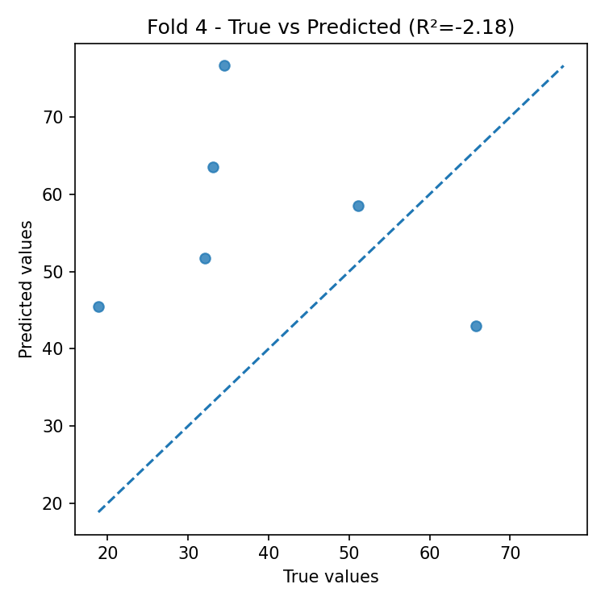
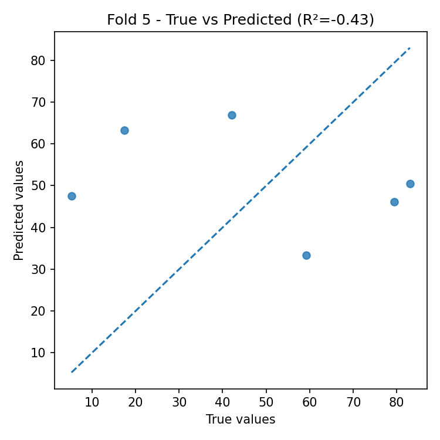
Residual Plots (by fold)
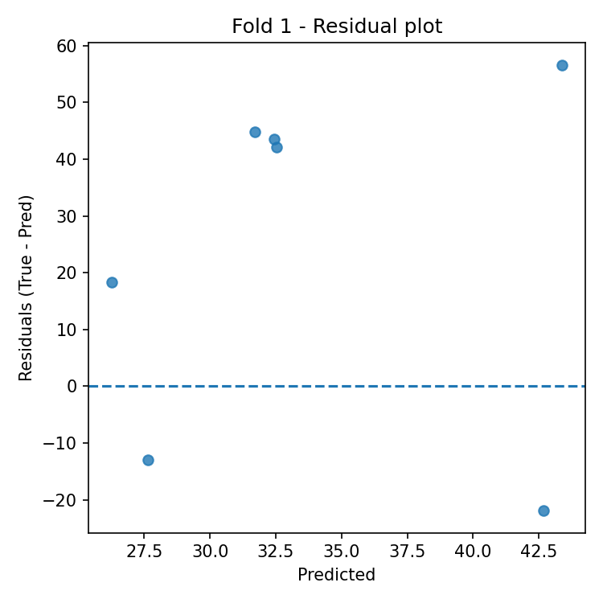
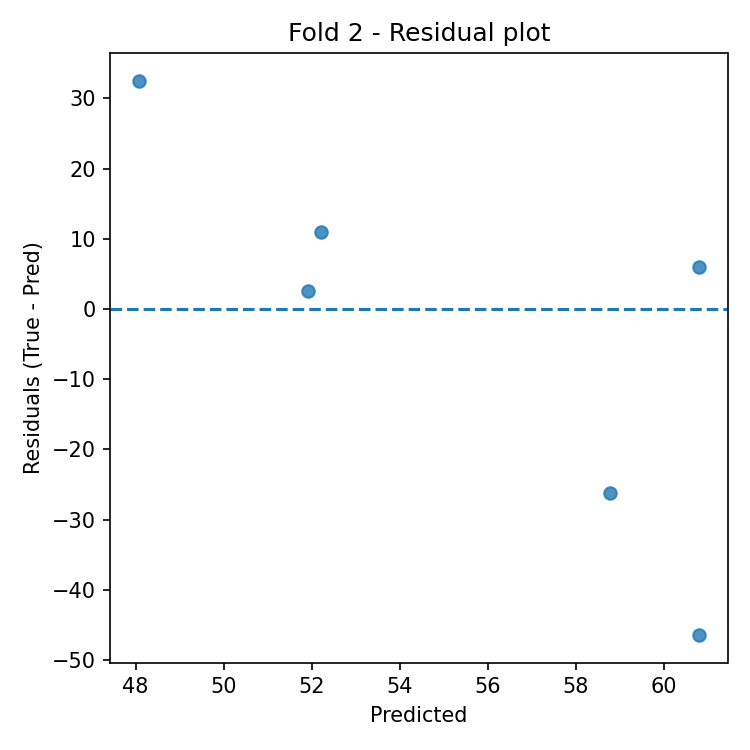
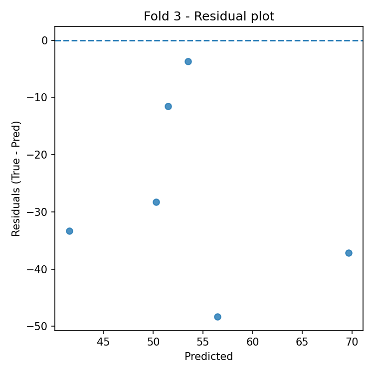
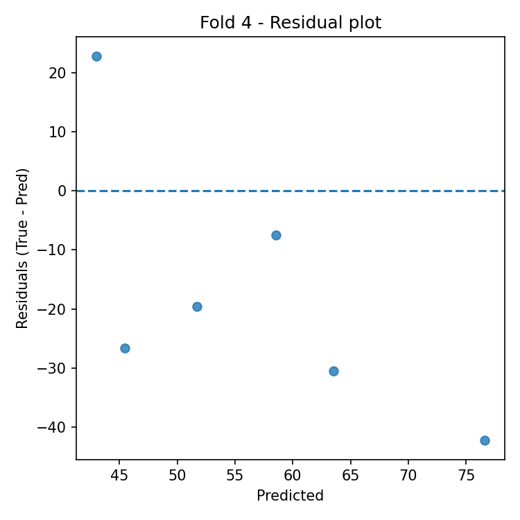
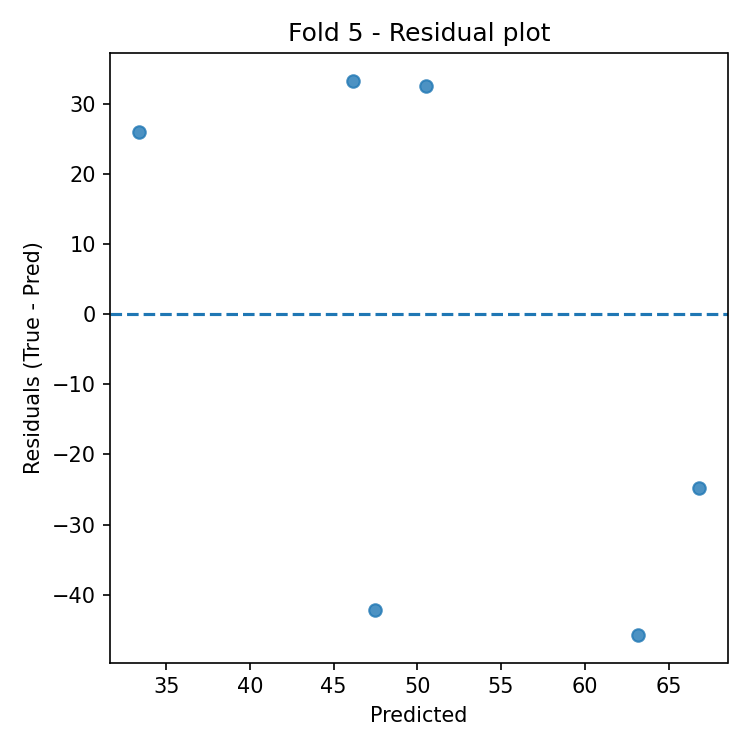
Automatic Interpretation
Overall Performance
- Mean R² across folds: -1.310 (± 1.191).
- Average error: RMSE = 31.298, MAE = 28.213 (same unit as target variable).
Model Stability
- R² variability across folds is high (std = 1.191).
- Average feature importance stability across folds: 0.041 (lower = more stable).
Most Important Features (average across all folds)
- Top-3: CR (0.132), PL (0.124), OL (0.117).
Best Fold
- Best fold: 2 with R² = -0.371.
- In the best fold, the most important features are: CR (0.172), OR (0.144), PL (0.141).
Residual Analysis (best fold)
- Residuals–predictions correlation: -0.771 (0 ≈ absence of linear bias).
- |Residuals|–predictions correlation: 0.185 (positive values indicate possible heteroscedasticity).
- Outliers (|res| > 3·std): 0.